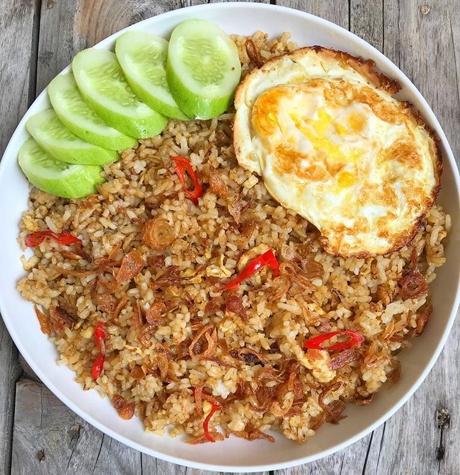

Resep Nasi goreng
Ilustrasi nasi goreng
Cita rasa nasi goreng Tanah Air tentunya nggak kalah lezat dari masakan luar negeri. Banyak wisatawan mancanegara yang datang ke Indonesia untuk mencoba mencicipi makanan yang satu ini, Menu olahan nasi goreng bisa dipadukan dengan beragam menu dan topping lain, seperti sosis, bakso, ikan, ayam, bahkan mangga juga bisa dijadikan topping spesial.
Bahan-bahan :
- Minyak
- Daun bawang 1 batang. Iris halus
- Cabai merah 3 buah
- Daging ayam 125 g. Cincang halus
- Telur 1 butir. Kocok
- Kecap manis 2 sdm
- Bawang merah 5 siung
- Garam 1 sdt
- Merica sdt
- Nasi 600 gr
- Bawang putih 3 siung
Cara memasak :
- Masukkan bawang putih, merah, dan cabai merah ke dalam cobek kemudian haluskan.
- Goreng telur menjadi orak-arik, sisihkan.
- Tumis bumbu yang sudah dihaluskan dengan minyak secukupnya hingga harum.
- Masukkan ayam cincang, telur dan daun bawang ke dalam bumbu. Tumis lagi hingga rata. Tambahkan kecap, garam, dan merica. Aduk hingga rata.
- Kemudian masukkan nasi dan aduk hingga rata.